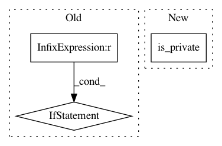

9f75a1cb875d40936c1ac9a59718e975382a9d23,TraditionalML/featurizer.py,,get_source,#Any#,4
Before Change
private = False
if pairs[0] == "10": private = True
if pairs[0] == "192" and pairs[1] == "168": private = True
if pairs[0] == "172" and 16 <= int(pairs[1]) <= 31: private = True
if private == True:
capture_source = source
break
// Get the incoming/outgoing sessions for the capture source
num_incoming = incoming_sessions[capture_source]
num_outgoing = outgoing_sessions[capture_source]
return capture_source
def packet_size(packet):
"""
Extracts the size of a packet in bytes from the hex header.
Args:
packet: Hex header of the packet
Returns:
size: Size in bytes of the IP packet, including data
"""
size = packet[1][32:36]
try:
size = int(size, 16)
except:
size = 0
return size
def extract_session_size(session):
"""
Extracts the total size of a session in bytes.
Args:
session: session list containing all the packets of the session
Returns:
session_size: Size of the session in bytes
"""
session_size = sum([packet_size(p) for p in session])
return session_size
def extract_protocol(session):
"""
Extracts the protocol used in the session from the first packet
Args:
session: session tuple containing all the packets of the session
Returns:
protocol: Protocol number used in the session
"""
protocol = session[0][1][46:48]
return protocol
def is_external(address_1, address_2):
"""
Checks if a session is between two sources within the same network.
For now this is defined as two IPs with the first octet matching.
Args:
address_1: Address of source participant
address_2: Address of destination participant
Returns:
is_external: True or False if this is an internal session
"""
if address_1[0:3] == address_2[0:3]:
return True
return False
def is_protocol(session, protocol):
"""
Checks if a session is of the type specified
Args:
session: List of packets in the session
After Change
capture_source = "0.0.0.0"
for source in sorted_sources:
pairs = source.split(".")
if is_private(pairs):
capture_source = source
break
In pattern: SUPERPATTERN
Frequency: 3
Non-data size: 3
Instances
Project Name: CyberReboot/NetworkML
Commit Name: 9f75a1cb875d40936c1ac9a59718e975382a9d23
Time: 2017-08-15
Author: CStephenson970@gmail.com
File Name: TraditionalML/featurizer.py
Class Name:
Method Name: get_source
Project Name: CyberReboot/NetworkML
Commit Name: 02b0fc91ade206d5ac167ddf89f5f1dfb4ad4a27
Time: 2018-01-29
Author: CStephenson970@gmail.com
File Name: NodeClassifier/utils/pcap_utils.py
Class Name:
Method Name: is_external
Project Name: CyberReboot/NetworkML
Commit Name: 9f75a1cb875d40936c1ac9a59718e975382a9d23
Time: 2017-08-15
Author: CStephenson970@gmail.com
File Name: TraditionalML/eval_OneLayer.py
Class Name:
Method Name: